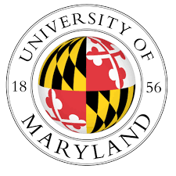
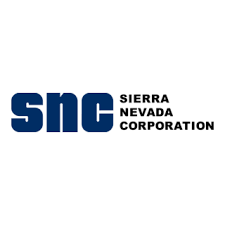

kiara d. raab
EDUCATION
Georgia Institute of Technology (Fall 2023 – Present)
M.S. Analytics – Computational Data Analytics (In Progress)
Courses: Marketing Analytics, Analytics Modeling, Data Computing
GPA 3.0

University of Maryland – College Park (Fall 2019 – Spring 2022)
B.S. Information Science – Data Science Concentration – Statistics Minor
Graduated in 3 years with a focus in data science and information ethics
GPA 3.62
WORK EXPERIENCE
Data Science Associate, PricewaterhouseCoopers LLP
– Washington, D.C.
September 2022 – Present
- Collaborated with Fortune 500 clients to design Responsible AI frameworks and model documentation pipelines, aligning stakeholder needs with emerging regulatory standards.
- Led strategic feature analysis for an internal model evaluation tool, resulting in the launch of a transparency-focused user card adopted across client teams.
- Built predictive models and fairness evaluation systems to guide risk decisions; advised on model refinement and explainability using SHAP and stakeholder reviews.
- Co-created AI product governance documentation that informed cross-functional decision-making between engineering, compliance, and product teams.
Software Licensing Assistant, University of Maryland
– Riverdale, MD
August 2019 – July 2022
- Analyzed software usage data from 10,000+ users to optimize licensing allocation and forecast renewal trends.
- Designed Excel-based dashboards to support licensing decisions and stakeholder budget planning.
- Identified and presented compliance issues, resulting in improved software governance.

Data Science Intern, Sierra Nevada Corporation
– Herndon, VA
May 2021 – August 2021
- Designed and deployed a custom PDF parser for international regulatory documents, automating competitive intelligence for aerospace compliance.
- Facilitated cross-team training workshops to onboard data stakeholders and align technical deliverables with policy timelines.
Academic Peer Mentor, University of Maryland
– College Park, MD
August 2020 – December 2020
- Mentored 45 students in Introduction to Information Science; led office hours and 1:1 coaching sessions resulting in 15% average grade improvement.
- Completed staff training in student engagement and communication.
RESEARCH EXPERIENCE
Data Science Fellow, National Agricultural Library (USDA ARS)
– Beltsville, MD
September 2020 – May 2021
- Delivered monthly data pipelines and dashboards to track agricultural disease outbreaks during COVID-19, helping product owners visualize critical trends.
- Supported policy alignment by integrating survey and funding data across federal programs serving underrepresented institutions.
Data Research Fellow, Tiny Catalyst
– Remote
July 2020 – August 2020
- Created and developed a health care survey to help fight racial inequalities in obstetrician work.
- Cleaned and manipulated datasets using Python and Tableau to create a correlative analysis to aid an analytical data research study.
ADDITIONAL INFORMATION
Certifications: Databases with SQL for Data Science with Python – IBM (2023), Supervised Machine Learning Regression and Classification – Stanford Online (2023)
Technical Skills: Product & Strategy: Product Strategy · Roadmapping · MVP Development · Feature Prioritization · Market Research · Responsible AI Data & Analytics: A/B Testing · SQL · Tableau · SHAP · User Insights · Python Collaboration & Delivery: Stakeholder Management · UX Collaboration · Agile/Scrum